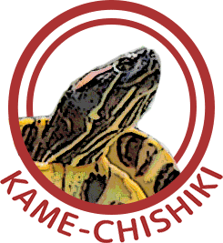

亀についてのアレコレをざっくり紹介！
かめちしき
Webサイト構築演習2 最終課題
2015.1
私はミドリガメを飼って十年になりますが、かめには飽きのこない魅力があると思っています。
そんな魅力を少しでも感じていただければ幸いです。
かめの世界
ウミガメ
水族館で大人気のウミガメは、おみやげコーナーではたくさんのグッズを見かけます。そんな愛らしいウミガメの特徴は、他の種類のかめに比べてからだが平たいこと。そして手足がすべて水を掻くためのオールのようになっており、爪や指がないことです。陸を歩くことは難しいですが、海に入ってしまえば泳ぎは大得意で、時速20～30Kmほどで移動できるのです。
リクガメ
かめといえば水の中に住むイメージが強いですが、陸を中心に生活するリクガメもいます。彼らは陸に住むからといって足が速いわけではありませんが、大きく硬い甲羅で自分を守ることができます。また、高く盛り上がった甲羅の中には栄養を貯めこんでおけるので、なかなか餌を見つけられなくても生き延びることができます。
水陸両用ガメ
ミドリガメやゼニガメで知られるこのかめが、日本で一番多く飼育されているかめでしょう。彼らは海ではなく川や池などに生息しています。そのため、リクガメに似た足に水かきが付いているなど、身体の作りはウミガメとリクガメの中間です。陸を歩くこともできれば、泳ぐこともできる、まさに海と陸の両立を成し遂げたハイブリッドタイプといえます。
珍しいかめ
ジーベンロックナガクビガメ
名前で想像つくけど想像以上の長さ
その名の通り、首の長いかめです。すべてのかめが甲羅にひっこむとは限りません。このかめは、あまりにも首が長いために、甲羅の中にしまうことができません。デメリットしかなさそうなのに、なぜこんなにも首が長いのでしょうか？実は、まだ理由は明確にわかっていません。首だけだして呼吸したり、遠くの餌をとるためだと言われています。

"Matamata turtle 2048x1536". Licensed under パブリック・ドメイン via ウィキメディア・コモンズ.
マタマタ
防御そして回避、まるで忍者！
名前の不思議さもさることながら、見た目も実に変わっています。甲羅も皮膚もギザギザしていて、まるで枯れ葉のよう。実は、このマタマタも、顔のギザギザのお陰で首を引っ込めることができません。この姿は、沼や川で、枯れ葉に擬態するためにできたと言われています。甲羅で守りつつ擬態で相手の目をくらませる、忍者のようなかめです。

"Carettochelys insculpta" by User:Dawson - en: Image:Carettochelys insculpta.jpg. Licensed under CC 表示-継承 2.5 via ウィキメディア・コモンズ.
{kind=link}
スッポンモドキ
スッポンどうのよりもこの顔である
スッポンモドキというだけありスッポンにそっくりですが、実際には分類上でも全く違うかめです。スッポンは凶暴で一度噛み付かれたら離さないと言われますが、スッポンモドキの場合は穏やか性格のようです。スッポンとの違いどうのこうのというよりも、なによりこんな豚さんみたいな愛嬌のある顔を紹介しないわけにはいかないでしょう。
かめコラム
亀は何を食べる？
かめには、上記で紹介したように、幅広い種類がいます。そのため、種類によって食べるものが違ってきます。ペットのかめとして最もポピュラーと思われるミドリガメを例にとると、意外と雑食で肉でも模でも食べます。リクガメは雑草、ウミガメは海藻などを食べています。一方、沼などに生息するかめには肉食もいますので、一概には言えません。
亀は長生き？
つるは千年、かめは万年生きると言われます。万年は言いすぎですが、かめは非常に長生きです。再びミドリガメを例に出しますが、彼らは20～30年生きることも珍しくありません。実は、動物最高齢としてギネスブックに載ったのはかめでした。トゥイ・マリラと名付けられたホウシャガメ（リクガメの一種）が、推定188年生きたと記録されています。
亀はなに呼吸？
すべてのかめは、基本的に肺呼吸と皮膚呼吸を併用して酸素を取り入れています。あまり激しく動かないので大量の酸素を必要とせず、肺も筋肉によって大きさを変えられるため長時間の潜水が可能となります。例えばアオウミガメは、一回の呼吸で１時間くらい潜水できますし、オサガメという種は５ヶ月も呼吸無しで生活できると言われています。